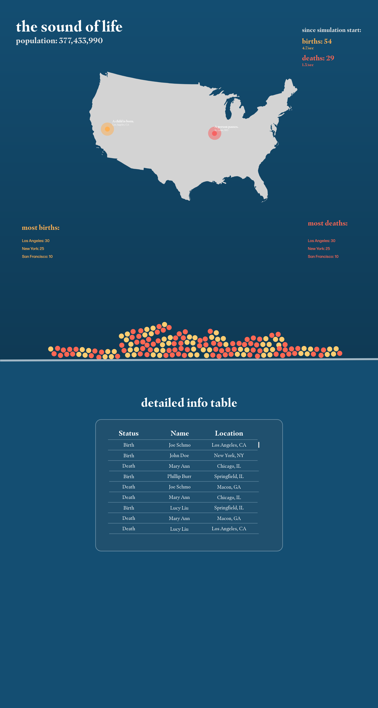
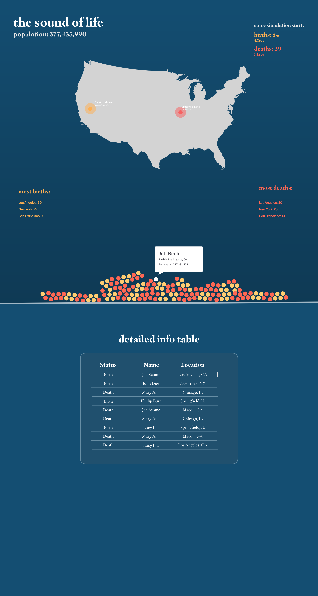

Name: Brian Lin | E-mail: brian.lin@wustl.edu | ID:451055
Name: Amori Han | E-mail: hamory@wustl.edu | ID:466837
Repository: Click here
Discuss your motivations and reasons for choosing this project, especially any background or research interests that may have influenced your decision.
Our primary purpose is to endow voice with data visualization so we want some dynamic data and every time the data changed, visualization will be changed with sound, which is more absorbing. And after brainstorming all the real-time data, flight data abstracted us. But then we realized that if we use all the data, the chorus of voice would be chaotic, so the best choice is to focus the data only on one airport, which would cause our seem overly-simple. Then we quickly brainstormed and searched for another category of live data. A good idea suddenly occurred. If our visualization could display the life that is newly born and just passed away, the voice would be more meaningful. It is like the sound of the soul.Provide the primary questions you are trying to answer with your visualization.
This design helps people feel the flow of life.What would you like to learn and accomplish? List the benefits.
What we want to learn:From where and how are you collecting your data?If appropriate, provide a link to your data sources.
From CIA, the link is : https://www.cia.gov/library/publications/the-world-factbook/rankorder/2054rank.htmlDo you expect to do substantial data cleanup? What quantities do you plan to derive from your data? How will data processing be implemented?
We will obtain the death rate and birth rate to run a simulation for the death and birth on the earth. For reference: https://worldbirthsanddeaths.com/
Visualization Design. How will you display your data? Provide some general ideas that you have for the visualization design. Create three alternative designs for your visualization. Create one final design that incorporates the best of your three designs. Describe your designs and justify your choices of visual encodings. You use the Five Design Sheet Methodology (Links to an external site.)Links to an external site..
We want to display a map of United States using D3 tools as our main image. When a new birth or death is recorded, we will use circles which correspond to their geo-specific location. We also envision having a table which logs the births/deaths during that particular day, as well as information about which countries in United States has the most amount of births and deaths.
Link is hereList the features without which you would consider your project to be a failure.
The features we absolutely need are as follows:
List the features which you consider to be nice to have, but not critical.
The features which would be nice to have are as follows:
Make sure that you plan your work so that you can avoid a big rush right before the final project deadline, and delegate different modules and responsibilities among your team members. Write this in terms of weekly deadlines.
We envision our schedule to be as follows:
If you have any questions, please reach out to us!
1: Random data of the interval of new birth/deaths in America
"data/Population Counters.csv"
This data records the total population of U.S, the birth and death rates. We created two normal distributions to simulate the interval between 2 deaths or 2 births. Therefore, the number is distributed with a standard deviation and set mean.
2: Random choice of a city and county to locate where that birth/death happens.
data source:U.S Census Bureau
This data records each county's population. It records the fraction of the county's population relative to the U.S. population, and will be used as the probability when we tried to randomly choose a county.
The API lets us check the birth and death amount in each county and city. It also can be used as our basis for location simulation to provide an extra level of realism.
In the most recent design draft of our project, we want to emphasize the interactiveness of our project and improve the visual design. When opening the site, the first thing the user would see is a map of the US. The visualization is color-coded, with yellow representing births and red representing deaths.The simulation will start and circles will start to appear, creating a ripple-like effect and trigger a bell-like sound from a HAPI drum.
Listen to the HAPI bell sounds hereThe sonic feedback will be another data point. The circles that are created will then fall down. The circles will aggregate and collect as the simulation continues running, give the user a visual sense of the visual representation of life and death, letting them create their own narrative.
Hovering over the balls will reveal the data node.

The detailed data table will keep a history of each data node which the user can scroll through.